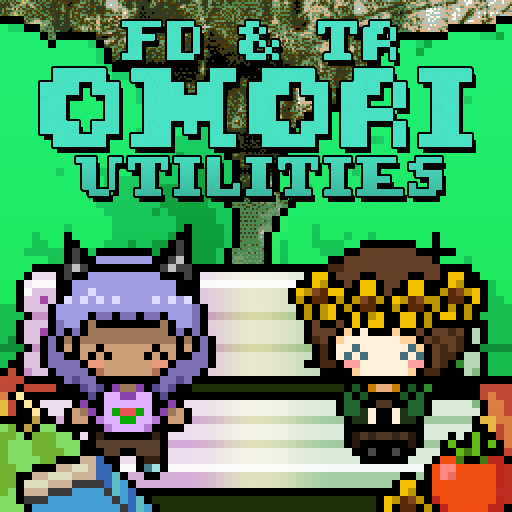

About the Website
The OMORI Modding Guide was created to fill a gap that we noticed in education about the different aspects of OMORI Modding. Please note, new capabilities and topics to discuss are being discovered all the time, and we simply don't have time to document all of them. If there is anything you feel the guide is lacking that must be added, reach out to either of the authors below.
About the Authors
FruitDragon
I'm Fruit, and I'm one of the cocreators of the mod PARALLELS. If you have any questions, you can find me on Discord at the username .fruitdragon.
TomatoRadio
I'm Tomato, and I'm a director for PARALLELS and contributor to many other mods. Questions related to my work can be directed to me on Discord under the username tomatoradio. In addition, requests for plugins from me can be made, but be aware that the actual creation is at my discretion.

FD & TR's Modding Utilities
FruitDragon and TomatoRadio's OMORI Modding Utilities are a pack of resources designed to be used in tandem with this Guide. Pretty much all of the templates that we mention in these tutorials are included in this plugin and asset pack.